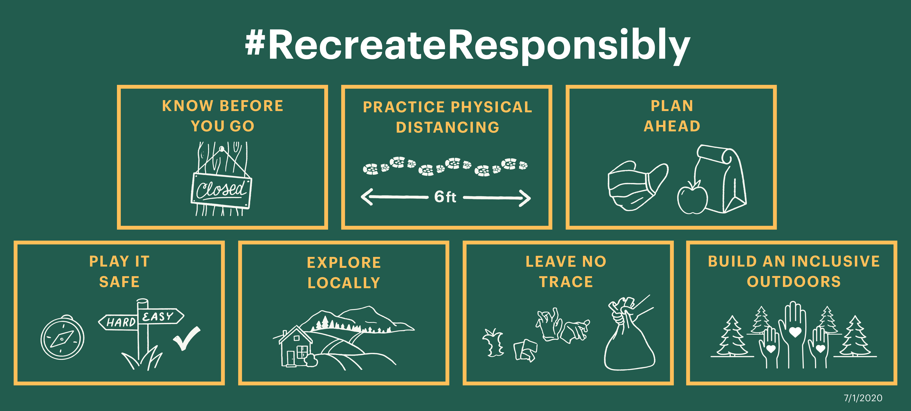
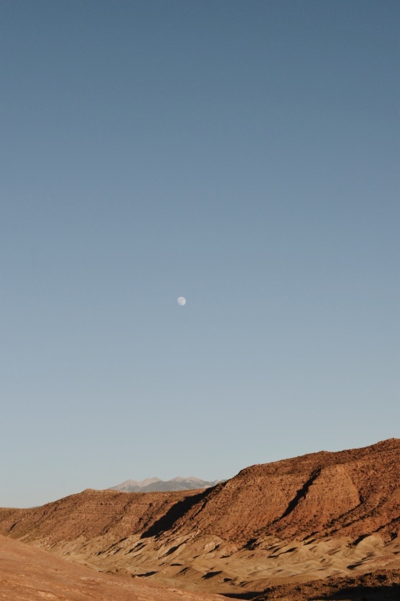
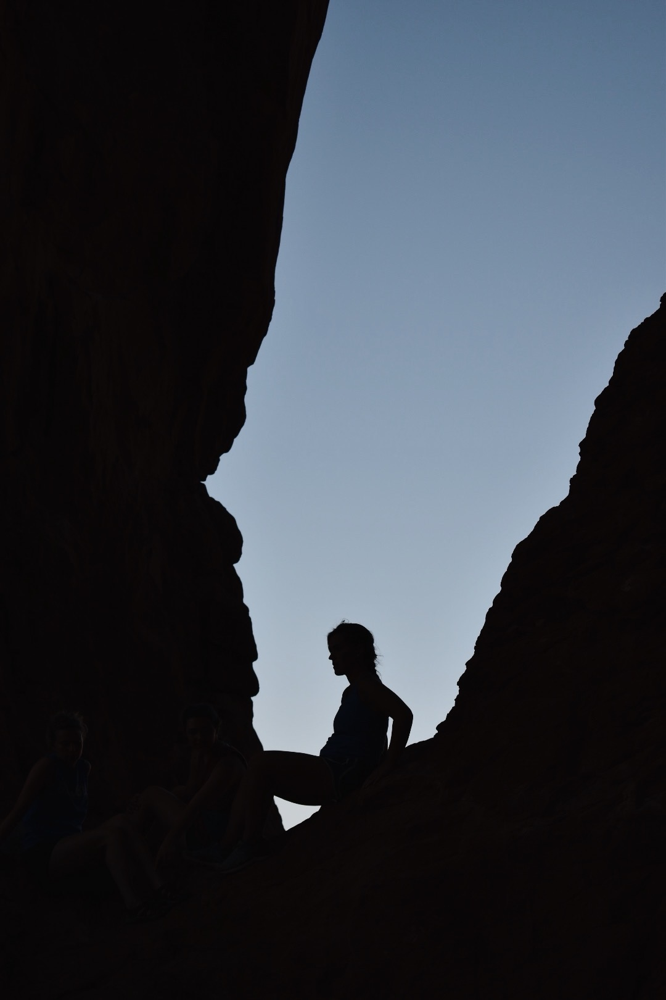
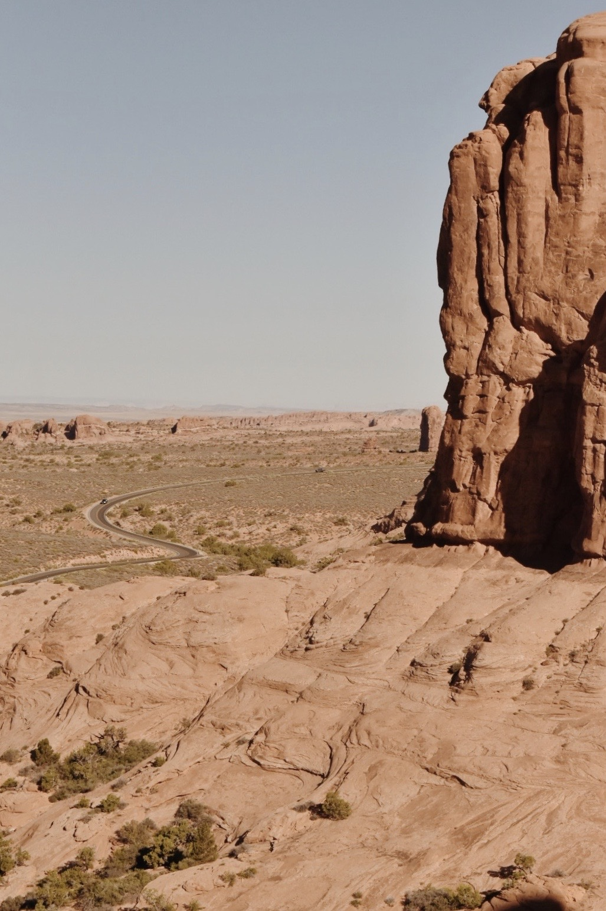

With the right precautions, we can enjoy public land safely during COVID-19. Recreational Equipment, Inc. (REI) teamed up with nonprofits, recreation businesses and agencies to put forth a collection of best practices for safely getting outdoors. The coalition recommends taking three steps at home and four once you get outside.
At home, the coalition suggests doing a status check on your preferred destination. If it’s closed, don’t go, but even if it’s open, have a backup plan in case it’s crowded. They also recommend planning for closed facilities by packing food, hand sanitizer and a face covering. Keeping explorations local and considering your impact on the communities you visit helps keep all parties involved safe.
Once outdoors, the coalition advises keeping group size minimal, practicing social distancing and staying home if you are sick. Second, choosing activities that are low risk reduces strain on resources like search and rescue teams and health care providers. Finally, it is important to keep public land clean by taking your trash with you and create an inclusive and welcoming outdoor environment for all visitors.
  You can learn more at RecreateResponsibly.com